From same-day sprinkler repair to full irrigation installs, well pump replacement, drainage installation, and sod installs — Water Oak Irrigation keeps Westchase lawns green and HOA-ready all year long.
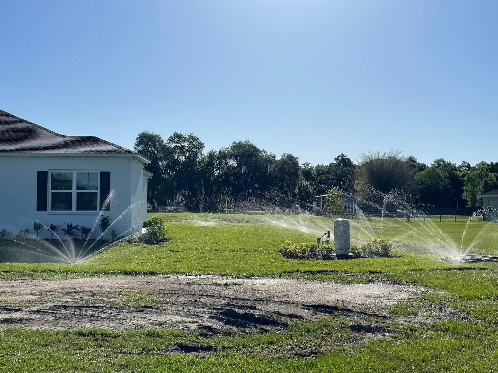
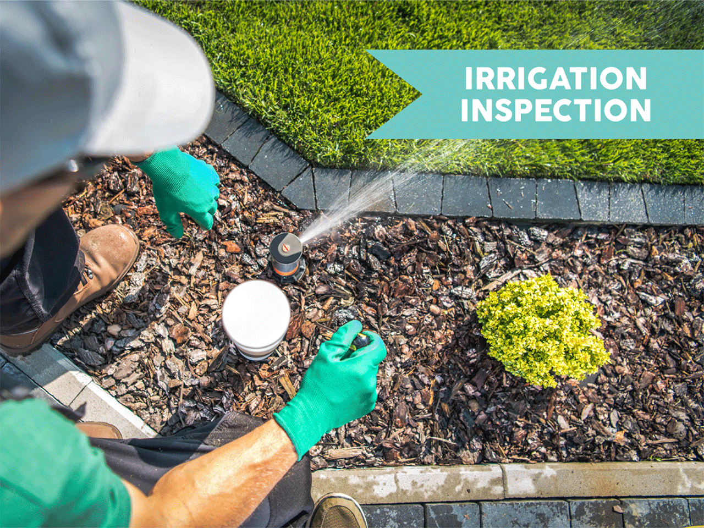
Westchase is one of Tampa Bay's most established HOA communities — and your lawn is expected to look the part. Water Oak Irrigation brings licensed, Florida Water Star–accredited expertise to every Westchase property, from urgent sprinkler repair to complete irrigation installs designed for Florida's tropical climate.
Licensed, permitted, and built for Florida's climate — every service start to finish.
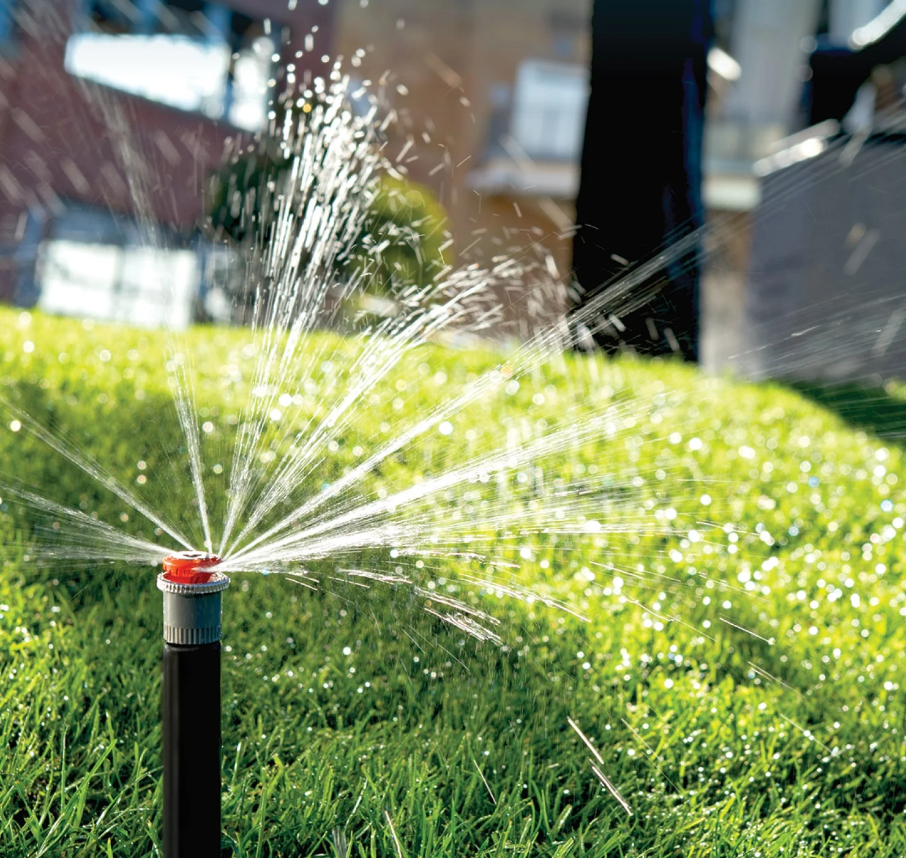
Broken heads, zone failures, underground leaks, controller issues — we diagnose the full system and fix it right. Same-day emergency response available throughout Westchase.
Learn More →Custom systems designed for Westchase's reclaimed water source, soil, and HOA requirements. Every install is fully permitted and meets Florida Water Star standards.
Learn More →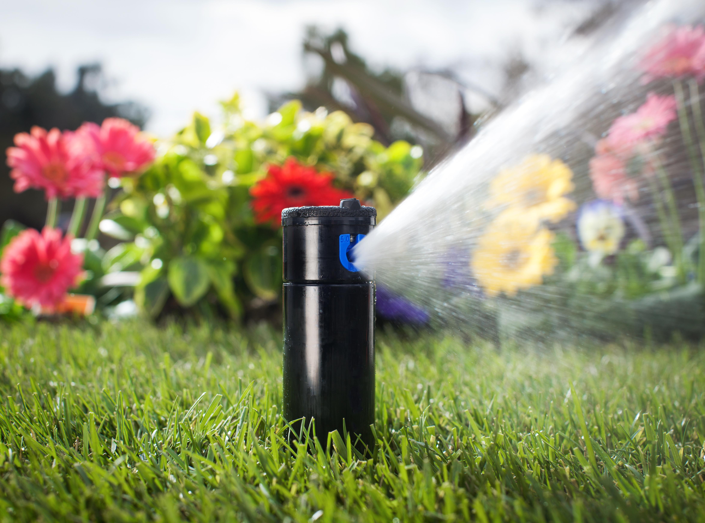
Well pump failure means your entire irrigation system goes down. We repair and replace well pumps, lake-drawn systems, and submersible pumps with same-day availability.
Learn More →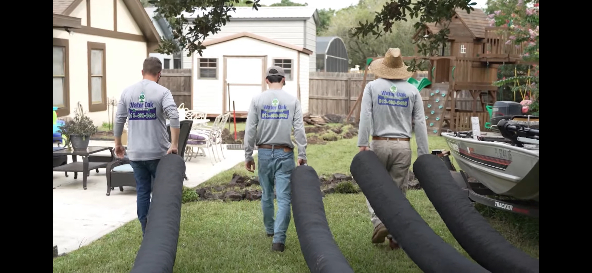
NDS catch basins, French drains, and channel drains engineered for Tampa Bay's tropical rainfall. Stop yard flooding before it damages your foundation or HOA standing.
Learn More →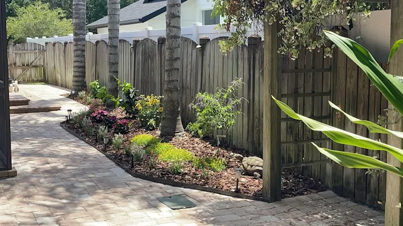
Professional sod installation paired with a correctly designed irrigation system. We match the right Florida-friendly turf to your soil, sun, and watering schedule.
Learn More →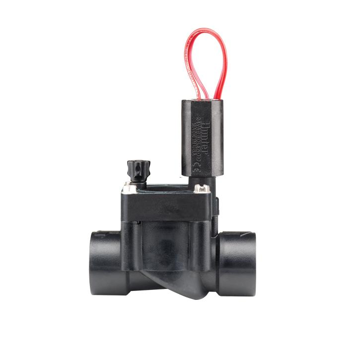
WiFi controllers that auto-adjust to Tampa Bay's water restriction schedules and live weather data — keeping your lawn HOA-green while cutting your water bill.
Learn More →Westchase's tropical climate, reclaimed water system, and HOA standards require a contractor who truly knows the area.
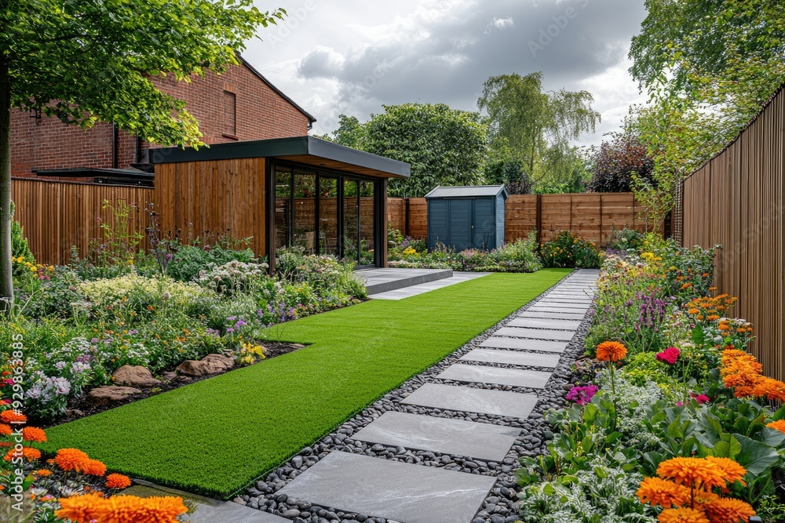
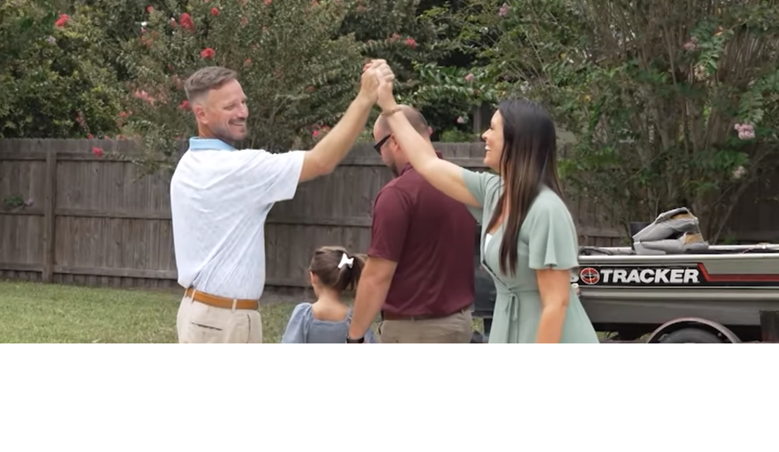
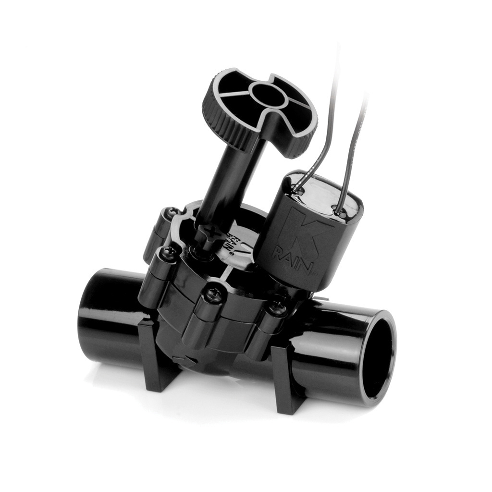
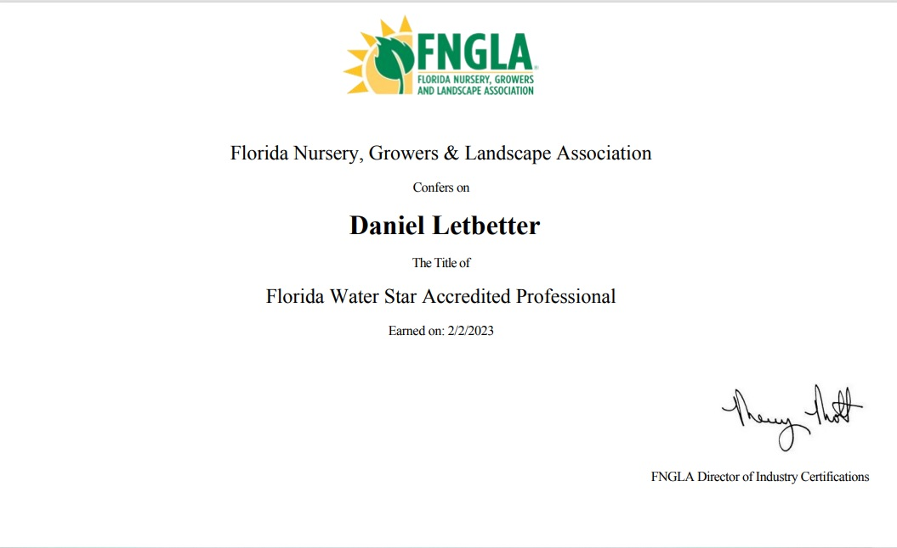
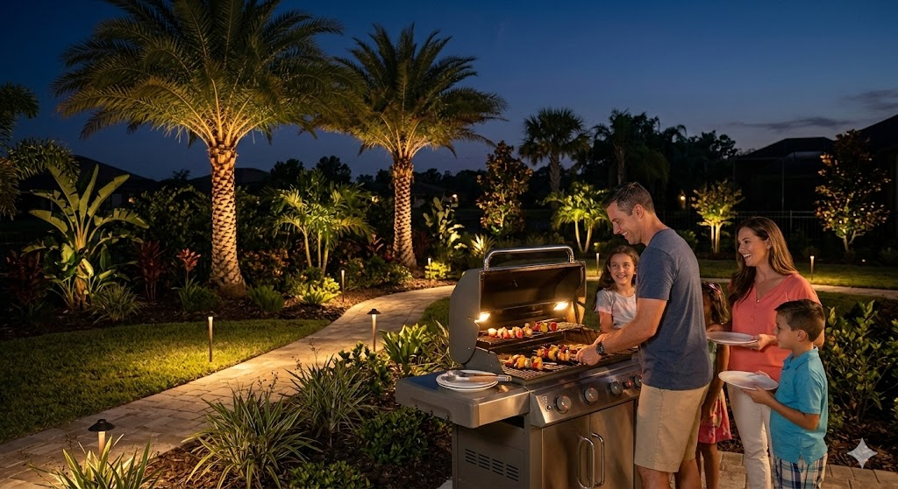
There's no shortage of irrigation companies in Tampa Bay. Here's what separates us — and why it matters for your Westchase property.
Dan Letbetter holds the top irrigation efficiency credential in Florida — issued by FNGLA. Not every contractor can say that.
We pull permits on every irrigation install and drainage project — protecting your property value, liability, and Westchase HOA standing.
Our NDS drainage installation work was featured on Designing Spaces, a nationally broadcast TV program. The quality is on record.
A sprinkler head blowing before your HOA inspection can't wait. We offer same-day sprinkler repair and emergency well pump service throughout Westchase.
WiFi-enabled controllers let us diagnose and adjust your system remotely — no waiting around for a service window.
We know Westchase's reclaimed water system, soil conditions, and HOA landscape codes. Every install is built for this community specifically.
Whether it's a broken head before an HOA inspection or a full system redesign, Water Oak Irrigation responds fast and does the job right. Licensed, permitted, and Florida Water Star accredited.
Simple, transparent, and built around your schedule — from first call to final walkthrough.
Book online or call (813) 499-8485. Tell us your issue — sprinkler repair, irrigation install, drainage, well pump, or sod.
We visit your Westchase property, evaluate the system, and give you a clear, upfront quote. No surprise charges — ever.
Permits, materials, installation, cleanup — our team manages it all start to finish. No sub-contractors.
We walk you through the completed work, show you any new equipment, and leave only when you're 100% satisfied.
Real reviews across Google, Angi, and Jobber.
"I highly recommend Water Oak Irrigation! Dan was very professional and addressed all my concerns. I had a French drain installed along with sprinkler repairs and I am very happy with the outcome."
"Dan was awesome to deal with. He showed up on time and the work was as requested and then some! He was extremely reasonable. I would definitely recommend Water Oak Irrigation."
"Dan gave a clear explanation of what we needed and took care of it efficiently. He didn't try to talk us into unnecessary extras. Would highly recommend."
"Even in the pouring rain, Dan got the job done on our sprinkler system. Would definitely recommend and will use again."
"They came out at 7pm for an emergency repair. Very professional, responsive, and the price was good. Customer service rocks."
"If you're looking for a knowledgeable, honest professional then Water Oak Irrigation is the company. The proposed project was executed perfectly."
We serve Westchase and the broader Tampa Bay region for sprinkler repair, irrigation install, well pump replacement, drainage, and sod installs.
Yes. Water Oak Irrigation provides full sprinkler repair throughout Westchase — broken heads, zone valve failures, controller malfunctions, underground leaks, and low pressure. Same-day emergency service available.
Costs vary by property size, number of zones, and water source. We provide free on-site assessments with transparent, upfront pricing before any work begins. Call (813) 499-8485 or book online to schedule yours.
Yes. We service and perform full well pump replacement for private wells, lake-drawn systems, and submersible pumps throughout Westchase and all of Hillsborough County.
We install NDS catch basins, French drains, and channel drains — each custom-designed for your property's grade and the volume of water Tampa Bay's tropical rains produce.
Absolutely — and we strongly recommend it. Pairing a sod install with a new or repaired irrigation system dramatically improves turf establishment and HOA compliance. We coordinate both so your lawn is watered correctly from day one.
Yes. Water Oak Irrigation is fully licensed, insured, and pulls proper permits on every job. Dan Letbetter is a Florida Water Star Accredited Professional and was featured on Designing Spaces (TV).
Sprinkler repair, irrigation install, well pump replacement, drainage, or sod installs — Water Oak Irrigation is ready for Westchase, FL.